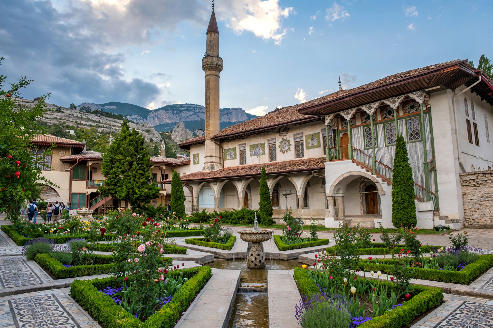

The Crimean Khanate, officially the Great Horde and Desht-i Kipchak, was a Crimean Tatar state existing from 1441 to 1783, the longest-lived of the Turkic khanates that succeeded the Mongol Golden Horde. Founded by Hacı I Giray, it was ruled by the Giray dynasty and from 1478 was a vassal of the Ottoman Empire. It was annexed by the Russian Empire in 1783 under Catherine the Great.
 | |
| Status | Khanate; Ottoman vassal from 1478 |
|---|---|
| Capital | Bakhchysarai (from early 16th century) |
| Common languages | Crimean Tatar, Ottoman Turkish |
| Religion | Sunni Islam |
| Government | Monarchy (Giray dynasty) |
| Established | 1441 |
| Annexed by Russia | 1783 |
Hacı I Giray, a descendant of Genghis Khan, established the khanate amid the disintegration of the Golden Horde, basing himself at Qırq Yer (Staryi Krym) and later at Bakhchysarai, where the Khans' Palace (Hansaray) remains. After an Ottoman expedition in 1475–78 seized the Genoese ports of the coast, the khanate accepted Ottoman suzerainty while retaining wide internal autonomy; the Girays ranked second only to the Ottoman house in the Islamic world, and in theory would succeed it.
Crimean cavalry conducted repeated slave raids (çapul) into the Polish–Lithuanian Commonwealth and Muscovy — the Nogai and Crimean Tatars burned Moscow in 1571 — carrying off captives to be sold at Kaffa (Feodosia), one of the largest slave markets of the early modern world. Historians estimate that millions of Slavs were taken over three centuries. The khanate also fielded armies as Ottoman auxiliaries from Hungary to Persia.
Russian expansion southward, the rise of the Zaporozhian Cossacks, and Ottoman decline eroded the khanate. The Treaty of Küçük Kaynarca (1774) made it formally independent of the Ottomans; in 1783 Catherine II annexed Crimea outright, and the last khan, Şahin Giray, abdicated. The annexation opened the Black Sea steppe to Russian colonisation.
From Wikipedia, the free encyclopedia.